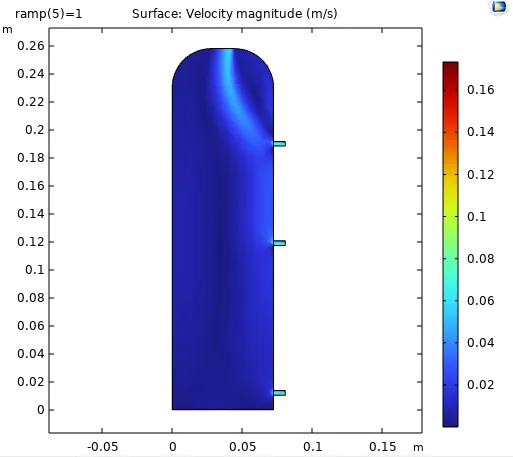
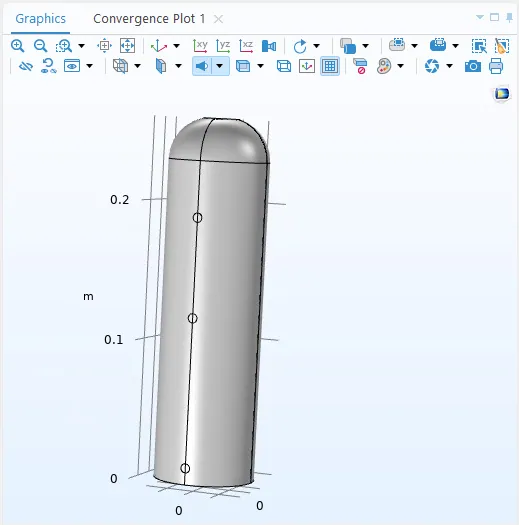

Lab 2: Water-Jet Range from a Soda Bottle
What we did
This experiment explores how water pressure and height affect exit velocity and jet range in a simple soda bottle setup. Three holes at different heights—top, middle, and bottom—were used to study how water depth influences the speed and distance of the streams. Bernoulli’s equation predicts the exit velocity, and projectile motion estimates how far each jet travels. A COMSOL simulation provides numerical results to compare with theory and experiment, helping to show how viscosity, turbulence, and flow contraction affect real behavior and which hole produces the farthest jet.
Procedure
- Begin with a Propel Fitness Water bottle (chosen for having a flat cylindrical shape and for being a create way to stary your day off right)
- It was also useful to know that this bottle held exactly of water to easily confirm our water had standard density of by weighing it full and subtracting the weight of the bottle on a scale in Nolop to see that it weighed .
- Cleanly poke three holes with a thumbtack, one at the top, the middle, and at the bottom of the bottle.
- Broaden the holes with a diameter nail
- Temporarily cover the holes with tape and fill the water bottle to the top of the dome shape (not to the top of the cap).
- Optional: Go outside to avoid peeing water all over NOLOP.
- We opted for the TTC Patio to demonstrate the amazing world of Fluid Dynamics to all of the students coming and going from Kindlevan Cafe.
- Set up the bottle at the edge of a table, with a large carpentry square on the ground below to mark how far the water traveled.
- Start recording, capturing both the ground & the bottle in frame.
- Remove the tape from one of the holes, and note the maximum horizontal distance the water stream travels.
- Retape the hole.
- Refill the bottle to the same level.
- Repeat this step with the remaining two holes.
- Finally, wait for everyone to finish cheering, clean up the lab supplies, and head back inside for calculations!
Sophie consented to having this photo taken and used; Alex did not. I have used it regardless to show our experimental setup.
Physical and Mathematical Derivation
From Bernoulli’s Equation we know that assuming the flow is inviscid, incompressible, and 2D:
Atmospheric pressure has a negligible change over the height of the bottom due to the extremely low density of air so . As such, the pressure component on both sides of the equation cancels out so,
The instant before exits the hole in the bottle, the water is static, so
Solving for where gives the
Ignoring viscosity, air resistance, and the affects of the hole’s finite diameter per ideal Torricelli’s flow and projectile motion then the time to get to the ground is:
So the distance the water travels laterally before it hits the ground is
Further simplifying and cancelling out gives us:
Our data
| Variable | Parameter | Dimension | Units | Value |
| Height of the water in the bottle | ||||
| Height of the top hole relative to the bottom of the bottle | ||||
| Height of the middle hole relative to the bottom of the bottle | ||||
| Height of the bottom hole relative to the bottom of the bottle | ||||
| Diameter of the water bottle | ||||
| Height of the cylindrical portion of the bottle | ||||
| Height of the truncated dome portion of the bottle | ||||
| Volume of the truncated dome portion of the bottle | ||||
| Density of water at 11°C | ||||
| Air and water temperature | ||||
| Diameter of the holes in the bottle | ||||
| Maximum distance water from the top hole traveled | ||||
| Maximum distance water from the middle hole traveled | ||||
| Maximum distance water from the bottom hole traveled |
Theoretical Calculations (for ideal Torricelli flow):
If we use the formula , then since represents the height of the water above the hole, we can say which gives that distance. As such:
Plugging the values for , , and for for the 3 respective cases, gives:
Comparison to Actual Values:
For our actual values, we got and for the top, middle, and bottom holes respectively. As such, we have these percent error values:
Since the values are very consistent, this implies that we’re off by a given coefficient in each case. The coefficient likely incorporates vena contracta effect caused by the small hole in the bottle opening up into a space where there’s next to no constriction and the vena constricta effects. Calculating this coefficient for our three holes gives:
, ,
When water passes through a sharp-edged hole, streamlines must make a tight turn to pass through the small opening. Because of inertia, the flow cannot hug the sharp edge; it overshoots slightly and converges downstream of the wall, forming a narrow jet called the vena contracta.
Experiments show for a sharp-edged circular orifice which means the effective cross-section of the jet is about 62% of the physical hole area: which aligns with the values that we found. Below are some of the important advancements into the study of vena-contracta coefficients as well as a recent study confirming the early findings.
- Borda (1766) – “Essai d’hydrodynamique.”
- Jean-Charles de Borda was the first to measure the contraction of a free jet leaving a sharp-edged orifice. This is where the vena contracta effect was first described quantitatively.
- He found the jet contracted to about 0.62 of the hole’s area, giving
- Weisbach (1845) – Lehrbuch der Ingenieur- und Maschinenmechanik
Consolidated early measurements, reporting for thin, sharp-edged plates
- Linfield (2000) – A Study of the Discharge Coefficient of Jets From Angled Slots and Conical Orifice
- Found the vena contracta coefficient of
- Was also the first of the papers referenced in articles I read to talk about velocity coefficients which also affect velocity exiting the container, but are found to be near 1 in their experiments.
*As a note, these papers are in Swiss-French, German-German, and Canadian-English respectively, but translating the portions where they go over their results states shows that their numbers match ours.
Things to Ponder:
Vena Contracta:
When looking closely at the water coming out of one of the holes, we noticed that the stream narrows slightly after leaving the bottle wall. This makes sense because of the vena contracta effect. As water accelerates through the small opening, the streamlines converge and the flow contracts to a smaller cross-section a bit outside the hole before expanding again. The velocity increases as the fluid passes through the narrow point, which is consistent with Bernoulli’s principle. This explains why the jet doesn’t stay flush with the hole’s diameter but instead pinches inward soon after exiting.
Where would we get the furthest jet?
The bottom of the bottle. Using the equation we can find the max distance that the stream reaches based on the height of the hole in the bottle.
With our experimental setup, the table height () is much greater than the water height (). In this case, the equation predicts that the furthest jet occurs when the hole is at the bottom of the bottle (), since the table is significantly higher than the water column.
Comsol

| Hole Height | H_bottom | H_mid | H_top |
| Simulated Velocity at Outlet | 0.085736 m/s | 0.82754 m/s | 0.806132 |
The simulated outlet velocities were much lower than theoretical predictions, but the relative trend (bottom > middle > top) was correct. One reason for the difference is that the model simplifies a 3D bottle into a 2D cross-section, which changes how the water exits and significantly reduces flow speed. Additional losses from numerical damping, mesh limitations, and turbulence modeling also lower velocities. Overall, the simulation captures the qualitative behavior but underestimates magnitudes due to these simplifications. (percent error is extremely high)
Assumptions:
- Modeled in 2D, not taking into account the full geometry of the bottle
- My calculations assume steady, incompressible flow of water under constant gravity, with atmospheric pressure at both the free surface and the hole.
- The bottle is assumed to be rigid and air resistance is ignored, so the exiting water is modeled as an ideal projectile. While this simplifies the math, real factors like wall angles, irregular bottle geometry, and changing water height can introduce noticeable deviations from the theoretical predictions.
Reflections:
- What we learned
- We confirmed that the water at the bottom of a cylinder will have the highest pressure acting on it and will therefore shoot the furthest when given enough clearance. We also learned from watching other people’s labs that leaving the water bottle on the ground and performing this experiment does not give the water enough clearance, resulting in the middle stream actually going the furthest.
- What we were most proud of
This is honestly one of the first times where we have performed labs and the results have matched the theoretical numbers on the first try. We know this is partially due to luck, but it felt fantastic.
- What took a while (was tough)
- Understanding the physics behind the vena-contracta and how it applies to our system took a good while, and I’m honestly not sure I understand it still.
- Most spectacular failure

In the first attempt to model this Lab in COMSOL, we worked to make the 3D geometry of the water bottle. The problem with this was that it was treated as a solid and not a domain for liquids to be added to and studied. We stuggled with how to troubleshoot this for quite a long time (watching youtube videos and getting mad at chatgpt for not giving me a good workaround) which eventually led to pivoting to a 2D model.
Originally written in Notion.